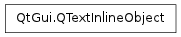

QTextInlineObject ¶

Synopsis ¶
Functions ¶
- def ascent ()
- def descent ()
- def format ()
- def formatIndex ()
- def height ()
- def isValid ()
- def rect ()
- def setAscent (a)
- def setDescent (d)
- def setWidth (w)
- def textDirection ()
- def textPosition ()
- def width ()
Detailed Description ¶
The PySide.QtGui.QTextInlineObject class represents an inline object in a PySide.QtGui.QTextLayout .
This class is only used if the text layout is used to lay out parts of a PySide.QtGui.QTextDocument .
The inline object has various attributes that can be set, for example using, PySide.QtGui.QTextInlineObject.setWidth() , PySide.QtGui.QTextInlineObject.setAscent() , and PySide.QtGui.QTextInlineObject.setDescent() . The rectangle it occupies is given by PySide.QtGui.QTextInlineObject.rect() , and its direction by isRightToLeft() . Its position in the text layout is given by at() , and its format is given by PySide.QtGui.QTextInlineObject.format() .
- class PySide.QtGui. QTextInlineObject ¶
- class PySide.QtGui. QTextInlineObject ( QTextInlineObject )
-
Parameters: QTextInlineObject – PySide.QtGui.QTextInlineObject
- PySide.QtGui.QTextInlineObject. ascent ( ) ¶
-
Return type: PySide.QtCore.qreal Returns the inline object’s ascent.
- PySide.QtGui.QTextInlineObject. descent ( ) ¶
-
Return type: PySide.QtCore.qreal Returns the inline object’s descent.
- PySide.QtGui.QTextInlineObject. format ( ) ¶
-
Return type: PySide.QtGui.QTextFormat Returns format of the inline object within the text layout.
- PySide.QtGui.QTextInlineObject. formatIndex ( ) ¶
-
Return type: PySide.QtCore.int Returns an integer describing the format of the inline object within the text layout.
- PySide.QtGui.QTextInlineObject. height ( ) ¶
-
Return type: PySide.QtCore.qreal Returns the inline object’s total height. This is equal to PySide.QtGui.QTextInlineObject.ascent() + PySide.QtGui.QTextInlineObject.descent() + 1.
- PySide.QtGui.QTextInlineObject. isValid ( ) ¶
-
Return type: PySide.QtCore.bool Returns true if this inline object is valid; otherwise returns false.
- PySide.QtGui.QTextInlineObject. rect ( ) ¶
-
Return type: PySide.QtCore.QRectF Returns the inline object’s rectangle.
- PySide.QtGui.QTextInlineObject. setAscent ( a ) ¶
-
Parameters: a – PySide.QtCore.qreal Sets the inline object’s ascent to a .
- PySide.QtGui.QTextInlineObject. setDescent ( d ) ¶
-
Parameters: d – PySide.QtCore.qreal Sets the inline object’s decent to d .
- PySide.QtGui.QTextInlineObject. setWidth ( w ) ¶
-
Parameters: w – PySide.QtCore.qreal Sets the inline object’s width to w .
- PySide.QtGui.QTextInlineObject. textDirection ( ) ¶
-
Return type: PySide.QtCore.Qt.LayoutDirection Returns if the object should be laid out right-to-left or left-to-right.
- PySide.QtGui.QTextInlineObject. textPosition ( ) ¶
-
Return type: PySide.QtCore.int The position of the inline object within the text layout.
- PySide.QtGui.QTextInlineObject. width ( ) ¶
-
Return type: PySide.QtCore.qreal Returns the inline object’s width.